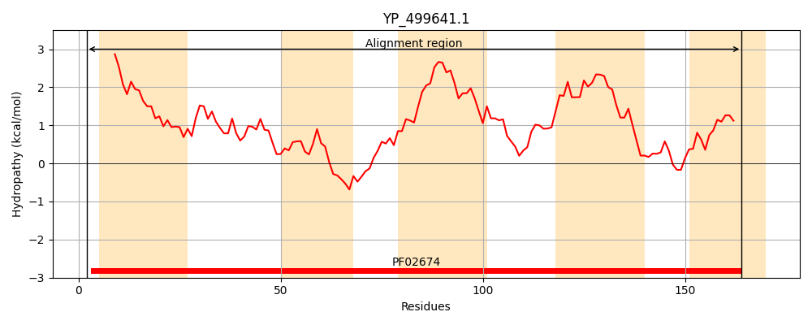
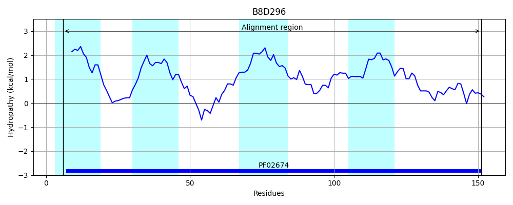
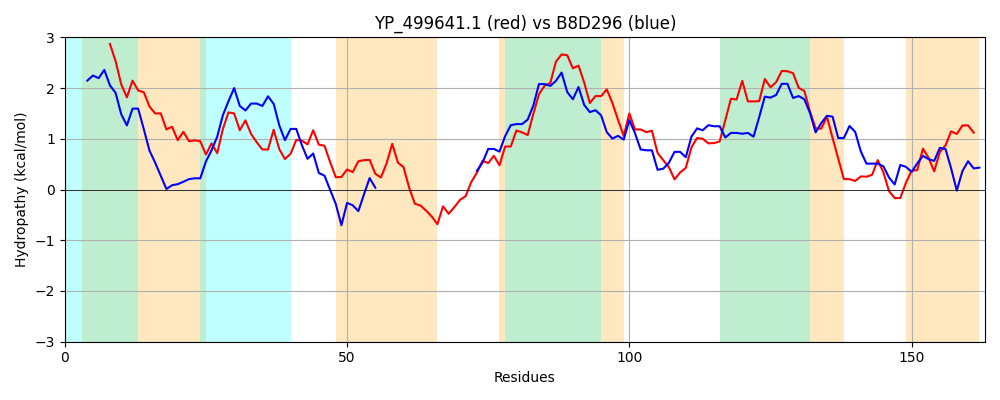

Hit Accession: B8D296
Hit TCID: 9.B.160.1.12
Hit Description: gnl|BL_ORD_ID|2078 gnl|TC-DB|B8D296|9.B.160.1.12 Colicin V production protein OS=Halothermothrix orenii (strain H 168 / OCM 544 / DSM 9562) GN=Hore_05660 PE=4 SV=1
Mach Len: 163
e:0.000000
Query TMS Count : 5
Hit TMS Count: 4
TMS-Overlap Score: 1.100000
Predicted Substrates:None
BLAST Alignment:
Score: 119 , Bit scores: 50 bits, E-value: 2.3e-08, Alignment length: 163, Percentage identity: 20
Query: 2 VIDFIIIIFFVYFVIVGFRRGFWLSMIHLSATIVSLWIASQFYKSIVERLIVFIPYPKTTAFNTTFAFHFNHLQNRFEAIVAFLMITLFCKFILYLIIVTFDKIIAYQNIHIFSRAMGMIVGVFMTIIVLHFTLYLLALYPNEALQHQLKISIVSHSLIFHIP 164
++D +I++ F+YFV+ G+ GF + I++L IA +FY+ + L+ ++ + ++ ++F ++ +F I+ L+ I+ + + G +G+ I+ +F + LA P + + L S+++ SL+ P
Sbjct: 6 ILDILILVVFLYFVLRGYNNGFIKQTSTVVGLILALLIAIKFYQPFQKYLLPYLDF-----------------SDQIMQFISFSLLFVFVNIIIQLLGRALKNIMNALFLGPVDQVAGAALGLLKAGILTYFLVLFLAQIPYQGITELLNRSVLAGSLLEMTP 151 | Protein Hydropathy Plots: |
|---|
|  |  |
Pairwise Alignment-Hydropathy Plot:
|
|---|
|  |